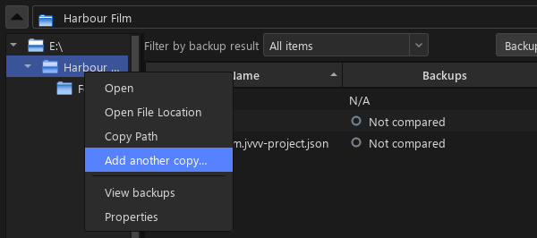
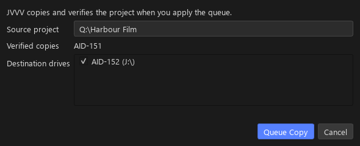

Add another drive after the first archive
Suppose you archived Q:\Harbour Film to AID-151 last month. Today you want a copy on AID-152. You need the same catalogue, the original project at its saved path, and the new destination. AID-151 can stay on the shelf.
1. Find the archived project
Open the catalogue you used last month. In AID-151’s listing, right-click the Harbour Film folder and choose Add another copy…. This works even if you cleared the completed task from Queue Manager. The command is available for projects that JVVV archived with a saved project record.

2. Choose the new drive
Check the source path and the drives already verified. Tick AID-152 and click Queue Copy. If the new HDD has never been scanned, add the drive to this catalogue first.

3. Apply and wait for verification
Click Apply. Keep the original project available while JVVV checks the file list and copies the files from Q:\. It then reads AID-152 and compares each file with the hash saved last month. Wait for Verified in Queue Manager before ejecting the finished drive.